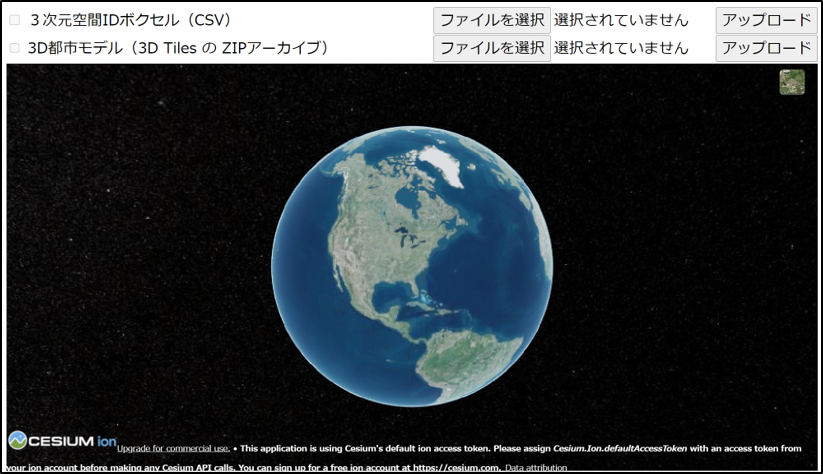
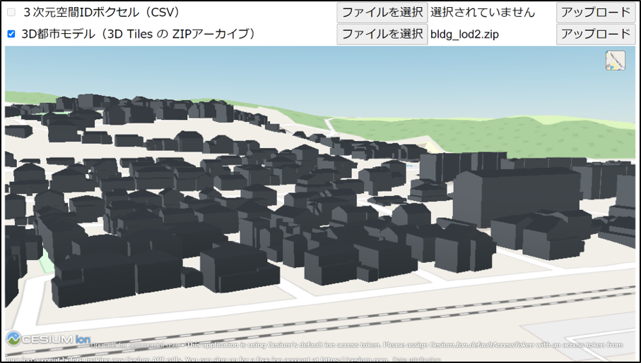
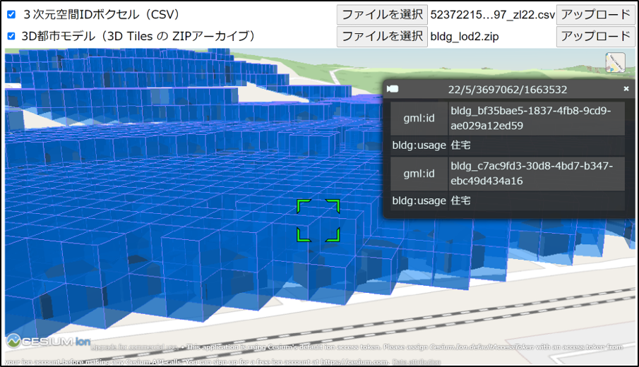

空間IDのメタデータ生成ツール
コマンド部
コマンドプロンプト（Windows）またはターミナル（macOS / Linux）を起動し、ツールのディレクトリに移動します。
Windows の場合
> cd commandmacOS / Linux の場合
$ cd commandPython 仮想環境を有効化します。
Windows の場合
> .venv\Scripts\ActivatemacOS / Linux の場合
$ source .venv/bin/activate空間IDが付与された CityGML から 地物ID（gml_id）と空間IDのペアリストを CSV 出力します。
Windows の場合
> python citygml2id.py [コマンド引数]macOS / Linux の場合
$ python citygml2id.py [コマンド引数]コマンド引数は以下の通りです。
引数 説明 値 デフォルト値 input_file_or_dir CityGMLのファイルのパス（ *.gml）または上位ディレクトリのパスoutput_file_or_dir 地物IDと空間IDのペアリストのファイルのパス（ *.csv）または上位ディレクトリのパス--lod 処理するジオメトリの最大LOD 1,2,33--grid-type グリッドタイプ zfxyzfxy--grid-level グリッドのズームレベル 20--grid-size グリッドのサイズ。x y z の順に指定。x のみ指定した場合は y z にも同じ値を適用。将来拡張用。 --grid-crs グリッドの座標参照系のEPSG番号。将来拡張用。 --id IDフィルタ。処理するデータを絞り込む際に gml:id の値を複数指定可能。 --extract 空間IDが付与された CityGML から、空間IDを抽出し、CSVへ出力する場合に指定。 --extrude ２次元データに付与する高さの最小値と最大値（単位：m）。--extract オプション指定時のみ有効。 --interpolate 立体（Solid）内側の空洞をボクセルで埋める場合に指定。Solid形状を持つ「Building（建築物）」「CityFurniture（都市設備）」「Vegetation（植生）」を空間IDに変換する際に使用するオプション。 --merge 上位の空間IDに統合（最適化）する場合に指定。 --debug デバッグログ出力および一時ファイル保持を有効にする場合に指定。 -h 使い方を表示。 使用例5：2次元の空間ID（地理院タイル(XYZタイル)）が付与されたCityGMLファイルから空間IDを抽出し、3次元の空間ID（ZFXYタイル）を生成する
$python citygml2id.py ../examples/citygml/udx/urf/urf_yoto_sample.gml ../examples/citygml/udx/urf/spatialid/urf_yoto_sample_zl20_3D.csv --grid-type zfxy --extract --extrude -10.0 100.0- 入力：urf_yoto_sample.gml
- 出力：urf_yoto_sample_zl20_3D.csv
- 空間IDを生成する標高値の範囲：-10mから100m
※ examplesディレクトリのサンプルデータで動作を確認できます。事前に使用例2と使用例4を実行しておいてください。
ビューア部
※ 本ドキュメントでは開発サーバを用いた手順に限定します。運用環境では Apache や Nginx 等の Web サーバと mod_wsgi や uwsgi 等の WSGI 準拠ミドルウェアを組み合わせてデプロイすることを推奨いたします。
コマンドプロンプト（Windows）またはターミナル（macOS / Linux）を起動し、ツールのディレクトリに移動します。
Windows の場合
> cd webmacOS / Linux の場合
$ cd webPython 仮想環境を有効化します。
Windows の場合
> .venv\Scripts\ActivatemacOS / Linux の場合
$ source .venv/bin/activate開発サーバを起動します
Windows の場合
> flask --app server runmacOS / Linux の場合
$ flask --app server runWebブラウザでビューアのトップページを開きます。URLは以下の通りです。

データアップロード
3D都市モデル、空間IDの順にアップロードします。

データ確認
チェックボックスで3D都市モデルや空間IDの表示を切り替えることができます。

3D都市モデルや空間ID（ボクセル）をクリックすると属性情報が表示されます。

※ 3D都市モデル、空間IDの順にアップロードした場合、空間IDのメタデータに3D都市モデルの属性情報が付与されます。
※ ビューアで表示する3D都市モデルは、FME Hubで公開されているFMEワークスペースPLATEAU2可視化用データ変換によって変換されたCesium 3D Tiles データセット (3Dモデル) または Mapbox Vector Tile (MVT) データセット (2Dポリゴン)を使用します。JSON属性にgml:idが記録されていない場合は、このワークスペースを編集し出力してください。